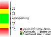

- Wat is gaafmaken?
- Fouten in gegevens vinden en verbeteren
- Bijv. door waarden omwisselen, consistent maken, vervangen
- Bij het microgaafmaken bekijken we iedere waargenomen eenheid apart.
- Kan zodra het record ontvangen is
- Bij macrogaafmaken bekijken we de (microgaafgemaakte) records tezamen.
- Fout pas zichtbaar met context
- Vereist dat alle records binnen een aggregaat ontvangen zijn

- Wat is automatisch gaafmaken?

- Software voert (deels?) gaafmaak taken uit.
- IHG en IHD hebben enkele micro-gaafmaak-algo's in gebruik. PS noemt dat AG. Bijvoorbeeld:
- Geen koeien door pijpleidingen.
- Prijzentabel
- Wat is output-gaafmaken?
- Een manier van macro-gaafmaken is output-gaafmaken
- Bereken een output-tabel,
- bepaal afwijkingen,
- werk terug naar correcties.
- Een manier van output-gaafmaken is Felligi-Holt (1976)
- Het lijkt ook de enige formele output-gaafmaak-methode te zijn?
- Scholtus (2014) verder uitgewerkt
- Basis voor het IHG "AG" script.
- Betere naam: Automatisch Output-Gaafmaken (AOG)
- Literatuur: Fellegi-Holt 1976
- Neem een 2D tabel

- Definieer regels zoals:
- som(goederenhandel) over landen = totale goederenhandel
- hoeveelheid x prijs_prijzentabel =~ StatWaarde
- etc.
- kunnen zowel micro-gaafmaak- als macro-gaafmaak-regels zijn
- Corrigeer kleinste aantal foute cellen waarmee tabel aan regels voldoet
- Cellen zijn fout of goed
- In feite: consistentie checken
- Aandachtspunten:
- Er is niet altijd een oplossing
- Er kunnen meerdere oplossingen zijn
- Geïmputeerde waarde hoeft niet juist te zijn
- Volgorde regels doet ertoe
- Afweging: weinig grote fouten versus veel kleine fouten
- Literatuur: Scholtus 2014
- Uitbreiding op Fellegi-Holt
- Formalisme voor imputatie-regels
- Aanname: invulfouten, niet per se foute cel-waarden. Voorbeelden:
- verwisseling waarden (e.g. hoeveelheid en StatWaarde)
- verdeling waarden (vergeten kosten van omzet af te trekken voor winst-veld)
- minteken
- Voordeel: wijzigingen in meerdere velden kunnen toch als 1 bewerking tellen.
- Vind kleinste aantal bewerkingen die de tabel consistent maken.
- Bepaal oplossingen (meerdere indien mogelijk)
- Neem kortste pad in "bewerkingenruimte"
- Optimaler dan F-H
afleiding dat dit een Maximum Likelihood Estimator for error-free record is.
- Modelleert fouten beter, en komt daardoor tot beter interpreteerbare imputaties.
- Status IHG: "AG" (AOG)
- Bereken verdachtheden per cel op basis van voorspelde waarde en verwachte fout
- Wanneer gerapporteerde waarde buiten bandbreedte C1, C2:
- 
- Vind oplossing via F-H die voldoet aant
- Minimaliseer aantal aangepaste cellen
- Imputeer fout met voorspelde waarde op volgorde van mate van afwijking
- Totalen moeten kloppen
- Aandachtspunten:
- Benut Scholtus 2014 niet.
- 1,5% StatWaarde verdwijnt (mogelijk door bias in onze voorspelling)
- Neiging fouten in kleine landen op te hopen, wat evident onjuist is
- Als software:
- Proof of concept, code niet van productiekwaliteit
- Solver is outdated.
- Ernstige performance issues
- Conclusie
- Automatisch Output-Gaafmaken: een goed idee!
- Maar niet in huidige proof-of-concept vorm

- Maar misschien deze? Maak gebruik van Scholtus 2014.
- Wat is de scope?
- AOG is framework voor alle AG. Willen we alle regels aan de solver geven?
- Zonee, wat wel?
- Hoe valideren? We krijgen eruit wat we erin stoppen.
- Nauwer samenwerken met Sander Scholtus / Methodologie, EBN2.x werkgroep